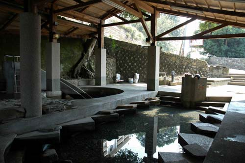
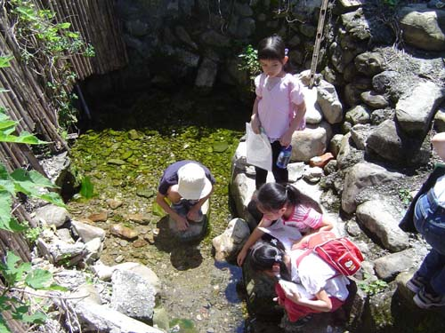

阿婆洗衣池
有愛蘭、六角亭、紹興池三處洗衣池。
台地下有豐沛的地下泉脈，在台地西側形成五口品質極佳的天然湧泉，不但是埔里酒廠釀酒祕方，也是附近婦女浣衣、兒童戲水的場所，更是穿越居民生命記憶的重要地景。
曾經紅極一時的埔里紹興酒，製酒的一口泉就在「紹興池」旁，在日據時代被視為製酒祕方的水泉，如今被稱為「紹興泉」。
「洗衣池」是社區婦女的集會所，也是庒內的情報交換中心。
（資料來源：新故鄉文教基金會網站及出版品「船山紀事」，林琮盛，1999）

《中年級學習單》：愛蘭台地早期生活想像故事